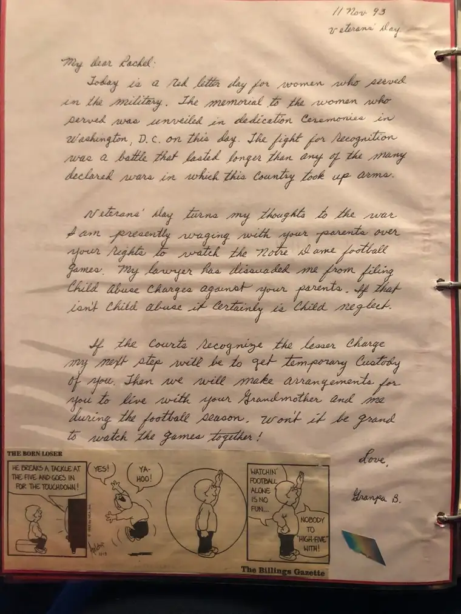

Recently, while at my niece’s baby shower, I had a chance to review a book my father made for my sister’s oldest daughter, his oldest grandchild, when she was very young. Having so few of his writings, given that a fire consumed my parents’ home and possessions in their final year living in our Montana abode before moving back to North Dakota, these letters are like relics of my father to me. Seeing his handwriting once again, I wanted to hold these words and his memory in place as a gift to share with my own children and grandchildren, along with some of his siblings and my cousins, so they could see the treasure my father was; something not all had a chance to experience as closely as I did.
In this first installment, you’ll learn a few things about my father. He was very patriotic. As a serviceman, having served in the U.S. Air Force, including overseas as an assistant chaplain in Japan, and with his three older brothers having served, too, the whole Beauclair family was very respectful of the flag, and our country. Dad would always unfurl the American flag in a post attached to the front of our home during any occasion that called for it, reminding us that our freedom came at a price. I am grateful to him for keeping me aware of this fact, especially in these days when our freedom seems so threatened. Finally, you will note that he was an avid fan of Notre Dame football. Though he didn’t go to Notre Dame, the “Fighting Irish” were by far his favorite college team, and he watched them religiously to the very end. You’ll also detect his deep love for his granddaughter, and, I’d say, for my sister and me and all our dear ones, who filled his later years with love and light.
With that, I offer you Dad’s Letter No. 1, from Veterans’ Day in 1993. (To avoid eye strain, I’ve typed the words below the image taken from the album where they are kept.)


My Dear Rachel,
Today is a red letter day for women who served in the military. The memorial to women who served was unveiled in dedication ceremonies in Washington, D.C. on this day. The fight for recognition was a battle that lasted longer than any of the declared wars in which this country took up arms.
Veterans’ Day turns my thoughts to the war I am presently waging with your parents over your rights to watch the Notre Dame football games. My lawyer has dissuaded me from filing child abuse charges against your parents. If that isn’t child abuse it certainly is child neglect.
If the courts recognize the lesser charge, my next step will be to get temporary custody of you. Then we will make arrangements for you to live with your Grandmother and me during the football season. Won’t it be grand to watch the games together!
Love,
Grandpa B.